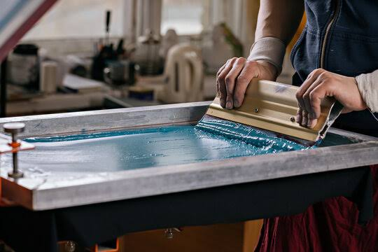

Screen printing democratized art by blurring the lines between mass-market consumerism and high culture. By allowing artists to effortlessly reproduce bold, vibrant images, it empowered creators like Andy Warhol to elevate everyday commercial iconography into museum-worthy masterpieces. Ultimately, it made fine art accessible beyond wealthy collectors. Its evolution from an industrial trade secret into a definitive creative medium shaped the art world in several distinct ways:The Pop Art Revolution: Visionaries in the 1960s used this method to challenge traditional fine art. By applying the same processes used to manufacture advertisements to subjects like celebrity portraits and consumer goods, artists dismantled the idea of the unique, untouchable canvas.Accessible Reproduction: Unlike original paintings, which only exist in one location, screen printing allows for large, high-quality editions. This expanded the art market and gave everyday admirers a way to own authentic, gallery-level pieces.Political Activation: Because the medium is affordable and fast, it became the primary tool for grassroots movements. Activists and poster collectives used the sharp, hard-edged aesthetic to spread powerful, reproducible messages directly to the streets.

body { font-family: 'Segoe UI', Tahoma, Geneva, Verdana, sans-serif; line-height: 1.6; background-color: #f4f4f9; color: #333; max-width: 800px; margin: 20px auto; padding: 20px; border-radius: 8px; box-shadow: 0 4px 8px rgba(0,0,0,0.1); } h1 { text-align: center; color: #ff6f61; } .step { background: #fff; margin-bottom: 15px; padding: 20px; border-left: 5px solid #ff6f61; border-radius: 0 8px 8px 0; box-shadow: 0 2px 5px rgba(0,0,0,0.05); } .step h2 { margin-top: 0; font-size: 1.4rem; color: #222; } .step p { margin-bottom: 0; }Prepare your artwork using graphic design software or by drawing it out by hand. It must be a high-contrast black-and-white image. Print this design onto a transparent acetate (or transparency) film. This acts as your positive stencil.
Take a clean mesh screen stretched tightly over a frame. In a dimly lit or light-safe room, coat the mesh using a thin, even layer of light-sensitive photo emulsion. Allow the emulsion to dry completely in a dark, flat space.
Place your transparency film holding the artwork flat against the coated screen. Expose it to a bright UV light source. The light hardens the emulsion everywhere except where the black design blocks the light.
Rinse the exposed screen with water. The unhardened emulsion—where your design was—will wash away, leaving behind a clean, open stencil in the shape of your artwork through which ink can pass.
Secure the screen to your printing press. Lay your substrate (e.g., a t-shirt) flat underneath the screen. Apply screen printing ink to the top, and use a squeegee at a 45-degree angle to press the ink firmly through the open mesh onto the item.
Carefully remove the printed garment or item. To ensure the design doesn't wash out or fade, the ink must be cured (heat-set) using a heat press or conveyor dryer. Once cooled, your finished product is ready.